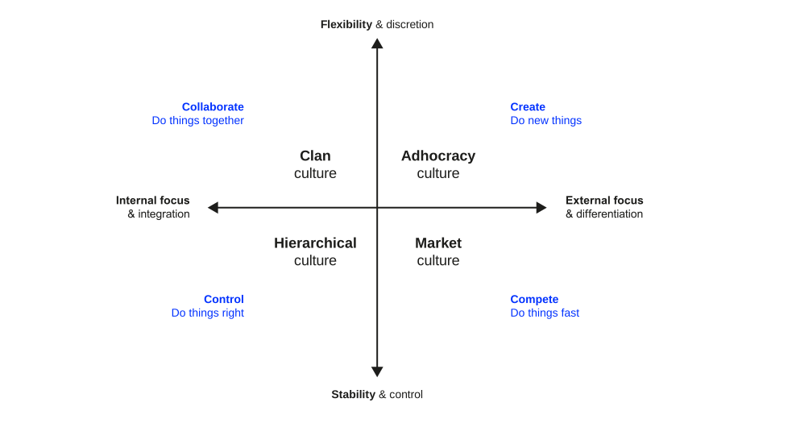
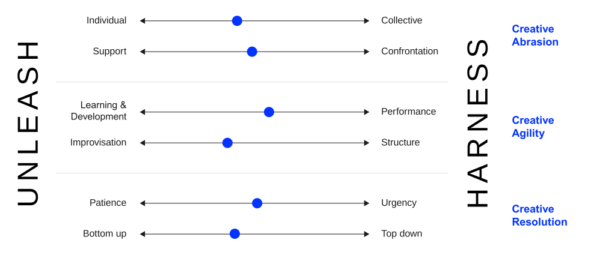
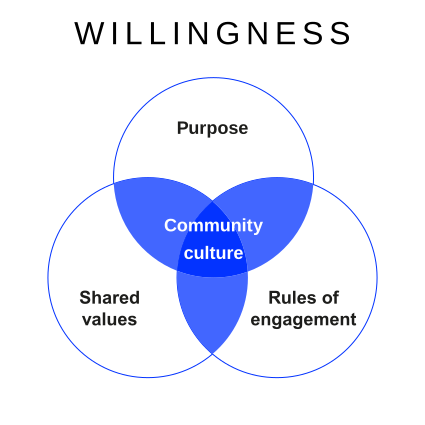
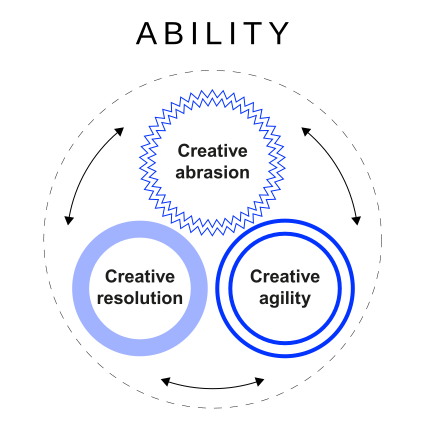

Leadership paradoxes
What tensions do leaders face?
Introduction
Opening remarks
The hallmark of a first-class leader is the ability to demonstrate contrary or opposing behaviors while maintaining a certain level of integrity, credibility and direction. Denison et al. (1995)
Great leaders can adapt their approach based on what the situation requires. For example, they might need to:
- Be decisive yet open to input
- Maintain stability while driving change
- Show empathy while making tough decisions
- Focus on details without losing sight of the big picture
These behaviors are complementary skills that effective leaders can deploy at the right moments. The challenge is displaying these different behaviors while still being perceived as authentic and consistent in your core values and direction.
This flexibility allows leaders to respond appropriately to complex, changing environments rather than being rigid in their approach. It’s not about being inconsistent or unpredictable, but rather having a diverse repertoire of leadership behaviors to draw upon while maintaining a coherent leadership identity.
Paradoxes in leadership
Opening remarks
Leadership requires the capacity to recognize and react to paradox, contradiction, and complexity. Denison et al. (1995)
Traditional management theories have often presented organizational phenomena in terms of discrete, opposing categories (e.g., Theory X and Theory Y, transactional and transformational leadership). In contrast, more recent theorizing has placed greater emphasis on paradox1, contradiction, and complexity, suggesting that many phenomexna may in fact fit multiple opposing categories simultaneously.
While not denying the underlying discrete categories, this more complex perspective recognizes that organizations face competing demands that appear contradictory but must be managed simultaneously. These tensions create the paradoxes that leaders must navigate. Effective leaders are those who have the cognitive and behavioral capacity to recognize and react to paradox, contradiction, and complexity in their environments (Denison et al., 1995). Particularly when considering that paradox is fundamental to contemporary work contexts characterized by globalization, technological change, and increased competition (Lavine, 2014).
Paradox
Contradiction refers to bipolar opposites that are mutually exclusive and interdependent such that the opposites define and potentially negate each other (Putnam et al., 2016, p 6).
For instance, supervisors who treat employees’ requests for family concerns as “taking away time from the office,” reinforce the belief that work and family are incongruent, and thus negate each other.
Paradox refers to contradictions that persist over time, impose and reflect back on each other, and develop into seemingly irrational or absurd situations because their continuity creates situations in which options appear mutually exclusive, making choices among them difficult (Putnam et al., 2016, p 8).
Paradoxes differ from contradictions in that they create situations of almost impossible choice, hence the seeming irrationality or absurdity of the situation.
For example, in the work-life literature, the finding that “the more autonomy that employees have, the harder they work, the more hours they devote, and the more that organizations control their lives” is paradoxical.
Ambidexterity
Ambidexterity refers to “an organization’s capacity to address two organizationally incompatible objectives equally well.” Birkinshaw & Gupta (2013, p. 291)
The ability of senior leadership teams to embrace tension between old states and activities and new ones is a key predictor of firm success (Tushman et al., 2011).
Leaders must “embrace inconsistency by maintaining multiple and often conflicting strategic demands.” O’Reilly III & Tushman (2011, p. 76)
Behavioral complexity
Increasing social and organizational complexity requires cognitive complexity and behavioral complexity — “we must conceive and perform” (Denison et al., 1995, p. 524).
Effective leaders are those who have the cognitive as well as the behavioral capacity to recognize and react to paradox, contradiction, and complexity in their environments (Denison et al., 1995; Lawrence et al., 2009; Spreitzer & Quinn, 1996).
Effective leadership is dependent on behavioral complexity, “the ability to perform the multiple roles and behaviors that circumscribe the requisite variety implied by an organizational or environmental context”. (Denison et al., 1995, p. 526)
Competing values framework
Opening remarks
The competing values framework highlights the trade-offs, tensions, contradictions, and paradoxes inherent in organizations and their leaders. Lavine (2014, p. 194)
Competing values (complexities)

The competing values framework (CVF) (Quinn, 1988) is a theoretical model that identifies four different management models that exist in tension with each other in organizations. The framework is built around two key dimensions. One dimension represents the continuum between flexibility or adaptability and stability or control. The other describes the continuum between efficient internal processes, such as human resource practices or internal control systems, and external positioning vis-à-vis stakeholders such as competitors, customers and clients. These dimensions create four quadrants, each representing a different model of organizational effectiveness:
- Human Relations Model (Clan Culture)
- Key assumption: Human development and participation produce effectiveness
- Characteristics: Family-like, collaborative, team-oriented
- Leadership style: Mentoring, facilitating, nurturing
- Value drivers: Commitment, communication, development
- Open Systems Model (Adhocracy Culture)
- Key assumption: Innovation, vision, and constant change produce effectiveness
- Characteristics: Dynamic, entrepreneurial, creative
- Leadership style: Innovative, visionary, risk-oriented
- Value drivers: Innovative outputs, transformation, agility
- Internal Process Model (Hierarchy Culture)
- Key assumption: Control and efficiency with appropriate processes produce effectiveness
- Characteristics: Structured, controlled, process-oriented
- Leadership style: Coordinating, organizing, efficiency-minded
- Value drivers: Efficiency, timeliness, consistency, uniformity
- Rational Goal Model (Market Culture)
- Key assumption: Aggressively competing and customer focus produce effectiveness
- Characteristics: Results-oriented, competitive, achievement-focused
- Leadership style: Hard-driving, directive, goal-oriented
- Value drivers: Market share, goal achievement, profitability
The key insight of the CVF is that the different model of organizational effectiveness contain inherent tensions or paradoxes (hence “competing values”). Effective management requires balancing these competing demands rather than focusing exclusively on one approach. The framework suggests that successful managers develop competencies across all four quadrants and can flexibly apply different approaches depending on the situation.
The four orientations are intuitively appealing, perhaps confirming their origin in psychological archetypes; most people can probably find the culture of their current organisation somewhere in this taxonomy. However, as the academic labels for thein each quadrant are often misunderstood, it has proven useful to substitute more accessible and commonly used verbs to describe the dominant activities that relate to each culture—collaborate, create, compete, and control (Lavine, 2014).
Leadership traits
| Clan (collaborate) | Adhocracy (create) |
| Mentors, facilitators or team builders — they hold everything together when times are tough, and encourage the pursuit of shared objectives. They’ll help members of their team develop the skills needed to work together more effectively. | Visionaries — they embrace change and new thinking, and are often not overly worried about risk. They’re not just imaginative, but eager to turn their ideas into reality. |
| Hierarchy (control) | Market (compete) |
| Managers — they’re focused on organizing, problem solving, and ensuring things are done correctly. They’re scrupulous about paying attention to detail, staying informed, and being rigorous in their analyzes. | Deal makers — they are results-driven, and usually focused on the short-term. They like to take charge, and act fast to close deals with customers. |
Implications
Leadership qualities seem to be best demonstrated by more movement throughout the framework, suggesting complex adaptation to changing circumstances (Denison et al., 1995).
Complex situations require complex responses. Sometimes organizations benefit from stability, and sometimes they benefit from change. Often organizations need both stability and change at the same time. In contrast to earlier approaches, the development of the competing values framework did not assume that stability and change were mutually exclusive, an either/or decision. Quinn et al. (2020, p. 12)
The CVF provides a description of roles and behaviors to encourage self-reflection and to provide a preliminary sense of behaviors and accompanying roles that can be learned. Working to overcome areas of relative weakness so that they can be transformed into average or adequate performance can help leaders see more opportunities for action when core areas of strength are not delivering the desired results.
Leading innovation
Opening remarks
Leading innovation takes a distinctive kind of leadership, one that unleashes and harnesses the “collective genius” of the people in the organization. Linda A. Hill
Innovation
An innovation can be defined as an idea, practice, or material artifact perceived to be new by the relevant unit of adoption and offers worthwhile benefits (Dewar & Dutton, 1986).
Innovations can be differentiated according to the degree of deviation from existing technologies and practices: incremental innovation and radical innovation (McDermott & O’connor, 2002).
- Radical innovations are fundamental changes that represent revolutionary changes in technology (Dewar & Dutton, 1986). They represent clear departures from existing practices and require new skills, levels of market understanding, leaps in new processing abilities, and systems throughout the organization (McDermott & O’connor, 2002).
- Incremental innovations are minor improvements or simple adjustments in current technology (Munson and Pelz 1979
The main difference that characterizes the two dipoles is the degree of new knowledge contained in the innovation (Dewar & Dutton, 1986), which implies technological uncertainty, technical inexperience, business inexperience, and technology cost.
Significance
Competitiveness depends to a large extent on the ability to innovate. So the ongoing challenge is to build an organisation that is able to innovate all the time.
The rhetoric of innovation is often about fun and creativity, but the reality is that innovation can be very taxing and uncomfortable, both emotionally and intellectually. Hill et al. (2014a, pp. p. 5)
This requires leadership—a different kind of leadership?
Leadership
The role of a leader of innovation is to create a community that is willing and able to generate new ideas. (Hill et al., 2014a, p. 4)
Hill et al. (2014a) has done in-depth research on many exceptional innovation leaders in different organisations and at different levels (e.g. Pixar, VW, Pentagram, Google, Pfizer, IBM). They asked what role the leader plays in creating a more innovative organisation. They concluded that directive leadership can work well when the solution to a problem is known and clear. But when the problem requires a truly original answer, no one can decide in advance what that answer should be. Therefore, leading innovation cannot be about creating a vision, persuading people and then somehow inspiring them to implement it.
So the question is not “how do I make innovation happen?” but rather, “how do I set the stage for it to happen?”
Paradoxes of innovation
The paradox at the heart of innovation is the need to unleash the talents of individuals and to harness those talents in the form of collective innovation (Hill et al., 2014b).
Hill et al. (2014a) identified six innovation paradoxes. The challenge for leaders is to help the organization continually re-calibrate between:
- affirming the individual … and the group
- supporting … and confronting (i.e., collaborative disagreement)
- fostering experimentation and learning … and performance
- promoting improvisation … and and structure
- showing patience … and and urgency
- encouraging bottom-up initiative … and and intervening top-down
Leaders who stay on the right side of this paradox will never be able to unleash the full genius of their staff; they will have few or no ideas to use. Those who stay on the left side will have many ideas and possibilities to work with, but they will not be able to turn them into new and useful solutions; instead, conflict and chaos will reign. The correct position at any given time will depend on the circumstances. However, the goal will always be to take the position that enables the collaboration, experimentation and integration that are necessary for innovation.

Hard work of innovation
The role of an innovation leader is to create a community that is willing and able to innovate over time (Hill et al., 2014a).


To build willingness, leaders must must nurture a sense of community, which rests on three elements—a sense of purpose, values, and rules of engagement (Hill et al., 2014a).
- Purpose
- Purpose is not what a group does but who is in it or why it exists. It is about a collective identity.
- Shared values
- To form a community, members have to agree on what is important. By shaping the group’s priorities and choices, values influence individual and collective thought and action (e.g., bold ambition, collaboration, responsibility, learning)
- Rules of engagement
- Those keep members focused on what is imperative, discourage unproductive behaviors, and encourage activities that foster innovation (e.g., respect, trust, influence, see the whole, question everything, be data driven.
The ability to innovate, is dependent on the leader creating creative abrasion, creative resulution, and creative agility (Hill et al., 2014a).
- Creative abrasion
- The ability to develop a marketplace where rich diverse ideas compete through discourse and debate.
- Creative agility
- The ability to develop and test different options, learn from outcomes and try again and again till the optimal option is evolved.
- Creative resolution
- The ability to to make decisions that combine disparate and sometimes even opposing ideas.
Innovation leaders
The leaders Hill et al. (2014b) studied had some things in common — they call it the right stuff
They are found to be
Are you an innovation leader? Start by asking yourself these questions about your organization (Hill et al., 2014a, p. 10):
- Do members of my organization feel part of a community?
- Does my organization have a shared purpose—one that binds us together and compels us all to do the hard work of innovation?
- Does it live by rules of engagement supportive of a set of core values: bold ambition, responsibility to the community, collaboration, and learning?
- Do we have the ability to generate ideas through candid discourse and debate?
- Do we have the ability to test ideas through quick pursuit, reflection, and adaptation?
- Do we have the ability to make integrative decisions, rather than compromising or letting some groups dominate?
Ask yourself some questions about your own leadership mind-set and practices: - Do I think my primary job as a leader is to create a context in which my team can innovate? - Am I comfortable serving as the “stage setter” as opposed to the visionary leading from the front? - Do I have the courage and patience required to amplify differences, even when discussion becomes heated and when ambiguity and complexity loom?
If your answer to any of these questions is “no” or even “I don’t know,” it’s probably time to look again at your own leadership role and at the leadership potential that may be hiding in your organization.
Homework
Read House (1996) and answer following questions:
- What is the essence of the theory?
- How does leader behavior impact subordinates’ motivation, satisfaction, and performance?
- What leader behaviors have you experienced?
- Do you have empirical evidence on the propositions made?
Literature
Footnotes
A paradox can be defined as a set of mutually inconsistent propositions, each of which seems true (Rescher, 2004).↩︎
Generosity here means the willingness, based on their own sense of personal security, to share power, control and credit↩︎
This includes the willingness to admit imperpections and asking for help↩︎